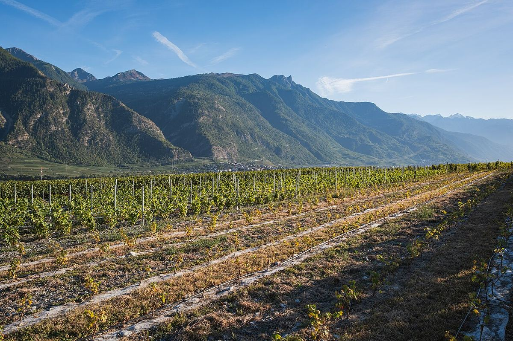

WHITE
Home › Switzerland › Valais
AOC ValaisValais
The Valais, in the upper Rhône valley, is Switzerland’s largest wine canton and the one with the greatest diversity of varieties. Its dry, sunny terraced slopes give Fendant, Petite Arvine, Pinot Noir and a long list of native grapes.

History
Winegrowing in the Valais dates back at least to Roman times, and in the Middle Ages the bishops of Sion and the religious orders owned important vineyards. The very dry conditions of the valley led, centuries ago, to the construction of the bisses, irrigation channels that carry glacier water down to the fields. In the nineteenth century the arrival of the railway and better communications encouraged the development of the vineyards, which spread across the slopes on the right bank of the Rhône. From the 1980s and 1990s many producers chose to lower yields and to revive old varieties that were close to disappearing.
Climate and landscape
The Valais is a glacial valley running east to west, surrounded by some of the highest mountains in the Alps. This barrier holds back the rain, so the central part of the valley is one of the driest in Switzerland, with many hours of sunshine and large differences between day and night temperatures. The foehn, a warm, dry southerly wind, helps the grapes ripen and keeps the vineyards healthy in autumn. Most vines are on the right bank, facing south, on terraces held up by dry-stone walls, from around 450 metres above sea level to more than 1,000 metres at Visperterminen, in the Upper Valais, one of the highest vineyards in Europe.
Soils and areas
Soils change greatly over short distances: there are schists, gneiss, limestone, glacial deposits, alluvial fans and alluvium. The best-known wine villages include Salgesch, Sierre, Sion, Vétroz, Chamoson, Leytron and Fully in the French-speaking part, and Visp and Visperterminen in the German-speaking part. Some municipalities have defined their own Grand Cru, tied to particular varieties and sites.
Grapes and styles
The best-known variety is Chasselas, which here is called Fendant and gives light, dry, mineral whites. Silvaner is called Johannisberg and is made dry or sweet. Petite Arvine, the emblem of the canton, gives savoury whites and sweet wines from grapes shrivelled on the vine. Other traditional varieties are Amigne, typical of Vétroz, Humagne Blanche, Heida or Païen (Savagnin), Cornalin and Humagne Rouge. Among the reds, Pinot Noir and Gamay dominate and are blended in Dôle, a traditional red of the canton; Syrah has also found good conditions on the warmest slopes. In the Anniviers valley the tradition of Vin des Glaciers survives: an oxidative white aged in barrels that are topped up year after year.
Wines · Valais
SWEET
Petite Arvine Grain Noble
See profile & where to buy ↗WHITE
Johannisberg
See profile & where to buy ↗WHITE